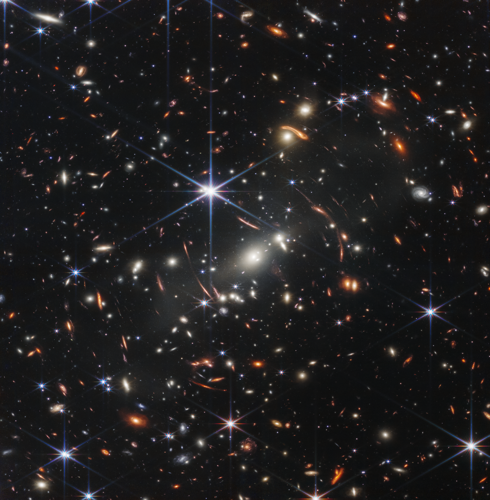
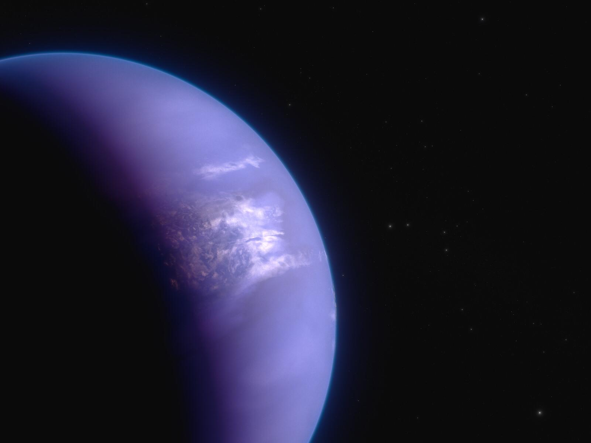
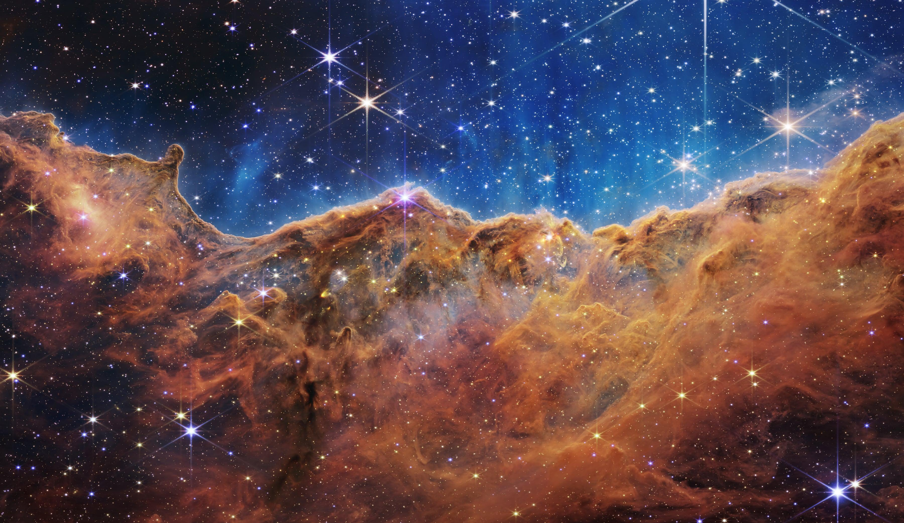
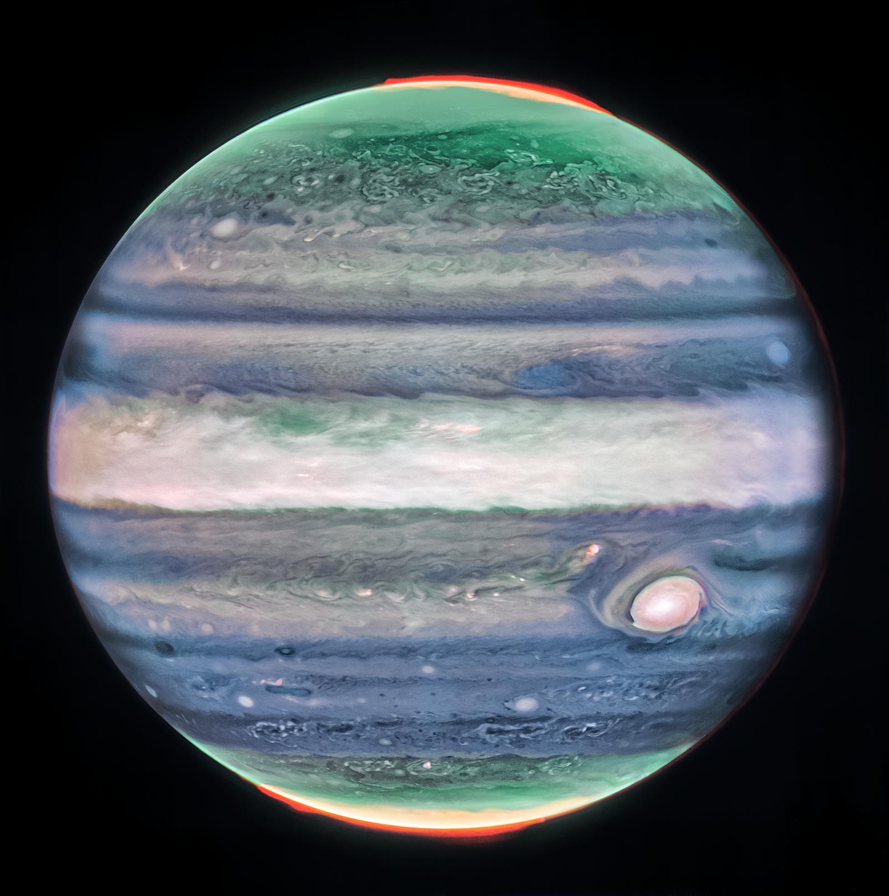

As Primeiras Galáxias
O telescópio capturou luz de galáxias formadas há mais de 13,5 bilhões de anos, revelando estruturas primitivas imensas formadas logo após o Big Bang.

As principais descobertas que estão mudando profundamente a nossa compreensão sobre a física e o cosmos.
O telescópio capturou luz de galáxias formadas há mais de 13,5 bilhões de anos, revelando estruturas primitivas imensas formadas logo após o Big Bang.

Identificação de assinaturas químicas claras de dióxido de carbono e vapor de água na atmosfera de mundos gigantes fora do nosso sistema solar.

O infravermelho permitiu atravessar nuvens espessas de poeira para observar, com detalhes inéditos, estrelas nascendo e esculpindo o espaço.

Observações detalhadas de vizinhos próximos revelaram auroras brilhantes em Júpiter e dados inéditos sobre cometas e asteroides.
